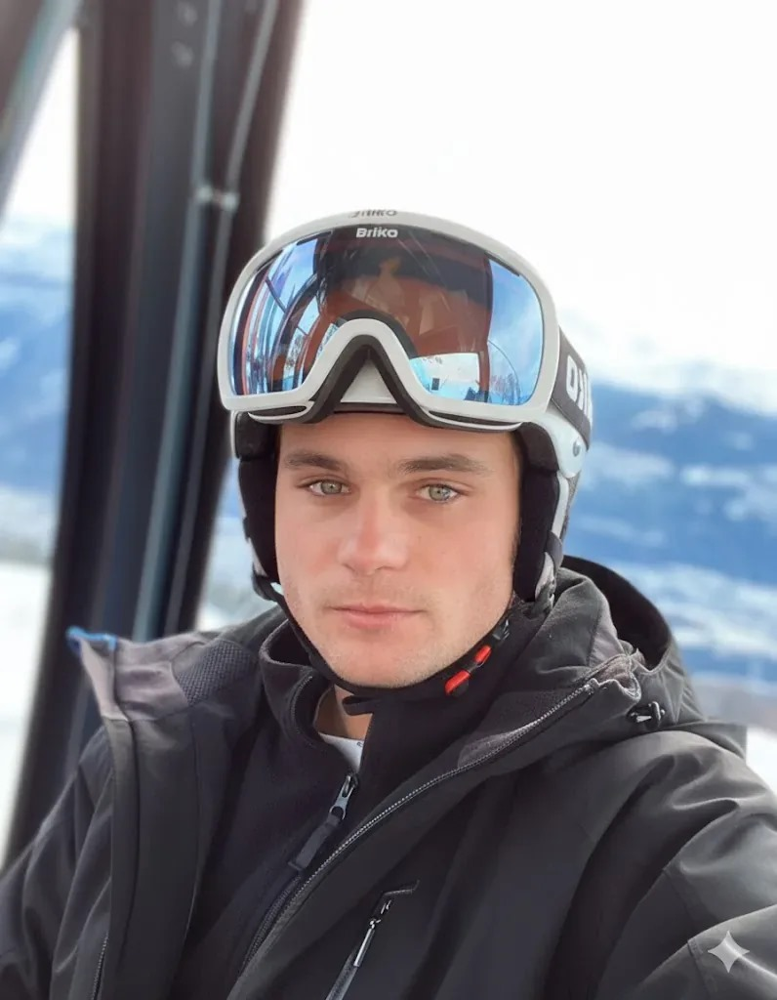

El Equipo Alpine: Tus Guías Expertos en las Pistas de Baqueira
El alma de Alpine Ski Academy es nuestro excepcional equipo. Contamos con
instructores de esquí y snowboard en Baqueira no solo altamente cualificados y titulados por las
federaciones más prestigiosas, sino también apasionados por la enseñanza y la montaña. Muchos han sido
formados y colaboran con SAFE Formación, el centro de referencia que garantiza los más altos estándares
de técnica y seguridad en la nieve en Baqueira. Te ofrecemos profesionalidad, un trato cercano y la
confianza de estar con algunos de los mejores profesores de esquí en Baqueira. ¡Dejate
guiar!

Víctor Puche Fita
Technical Director
Director técnico de Alpine Ski Academy y miembro del equipo de formación
SAFE Formación de la estación de Baqueira Beret, Víctor combina su experiencia en la
enseñanza personalizada con una profunda formación profesional.

Emilio Fernando Gil
Sports Technican Level 3
Emilio, socio fundador de Alpine Ski Academy, aporta al equipo no solo
una sólida formación técnica, sino también una actitud siempre disponible, amable y
resolutiva.

Jorge García Vieitez Ribagorda
Club Former
Jorge cuenta con experiencia en la enseñanza tanto a niños como adultos,
destacando por su capacidad de adaptar la técnica y el aprendizaje al nivel y las necesidades
de cada alumno. Ha trabajado en clubes de competición, donde ha desarrollado una sólida base
técnica y un profundo conocimiento del esquí de rendimiento.
Mantente Informado: Nuestro Blog de Esquí y Snowboard en Baqueira
Sumérgete en el mundo de la nieve con nuestro blog. Encuentra los mejores consejos
para mejorar tu técnica, guías detalladas sobre Baqueira Beret, novedades de Alpine Ski Academy y mucho
más. Atriculos como nuestras recomendaciones de los mejores restaurantes de Baqueira y del Valle de Aran entre muchos
otros que te interesaran.
Dónde comer en Baqueira: Guía de restaurantes en el Valle de Arán
Prepara tu cuerpo para las pistas con estos ejercicios específicos que mejorarán tu fuerza, equilibrio y resistencia.
Leer más
Cómo elegir la longitud de esquí adecuada para tu nivel
Nuestra guía completa te ayuda a seleccionar la longitud de esquí perfecta en función de tu altura, peso y nivel de habilidad.
Leer más
Lista de verificación para un viaje familiar de esquí: No olvides estos artículos
¿Planeando unas vacaciones de esquí en familia? Usa nuestra lista de verificación para asegurarte de empacar todo lo esencial para un viaje sin estrés.
Leer más